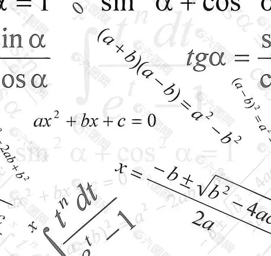

何谓运算？
阁下接受过九年制义务教育，想必对运算的概念并不陌生。但请问阁下，何谓运算？
《说文解字》中解释“运”为“迻徙也”，即移动、迁移的意思; 《易·系辞》中提到“日月运行”，这里的“运”指的是日月星辰的循环运动，带有回旋往复的含义; 此外，“运”也与命运相关，如“气运”“运数”“命运”，指的是历史循环所决定的状态。
《说文解字》中解释“算”为“数也”，即计算的意思； 《论语·子路》中提到“斗筲之人，何足算也”，这里的“算”指的是计算，用以表示不值得一算，即不值得重视； 在《孙子·计》中提到“夫未战而庙算胜者，得算多也”，这里的“算”则是指计划、谋划； 宋·姜夔《扬州慢》词中的“杜郎俊赏，算而今、重到须惊”，这里的“算”表示推测。
可见，运算的含义非常丰富，不只是简单的加减乘除。运算，含有运筹、筹划、计算、谋划、推测等含义。
数学意义的运算，可以看做运算的一个特例。我们研究如何让计算机进行辅助运算，可从数学意义的运算开始。因为，数学运算，其含义更加简单，明确。
那么，数学对于运算的定义又是什么呢？
数学中的运算，指的是按照一定的规则，对已知量进行某种组合，从而得到新的量的过程。
例如，已知量是1和2，按照加法规则进行组合，得到新的量3。
而更加复杂的运算，则是对简单运算的组合。因此我们也可以说，表达一个数学运算，就是表达一种简单运算的组合方式。
例如，我们已知了加法运算，那么乘法运算，就是对加法运算的组合。比如3乘以4，可以表达为，从0开始，把加3这个运算，执行4次。
我们通过编程的方式进行复杂的数学运算，就是通过程序语言，来表达运算的组合方式。
何以表达？
所谓表达，就是通过某种方式，实现信息的传递。
一个成功的表达，既要“说清楚”，也要"听明白“。编程语言，就是人与计算机的沟通桥梁，一个好的编程语言，要让人能够”说清楚“，计算机能够”听明白“。
计算机和人不同，一些对人来说清楚的表达方式，对计算机来说可能没那么容易理解。
例如，我们说“把1和2相加”，人能够理解，但是对计算机来说，这可不容易理解，它要理解“把”，“和”，“相加”这些词汇的含义，还要理解这句话的语法，才能准确的把握这句话的含义。
对人类来说顺其自然的语言，对计算机来说，恐怕就是挑战。虽然现代AI技术对于自然语言理解有了很大进步，但准确无误的理解人类语言，仍然是一个挑战。
另一方面，对计算机来说自然而然的机器语言，对人类来说，恐怕就有些晦涩难懂了。
因此，我们需要寻找一个平衡点，这种表达方式，规则简单，计算机容易处理，同时也不失可读性，人类容易理解。
如何找到这种平衡点呢？首先，我们要抽取关键信息。还是以“把1和2相加”这句话为例，关键信息是“1”，“2”和“相加”。
很显然，我们可以用 1 2 + 这三个符号，来对应这三个关键信息。
然后，我们还要考虑，这三个符号，如何组合在一起，形成“一句话”呢？
可能你要说，这还不简单，咱就写 1 + 2 不就得了。当然，这是对的。但是，这种写法的规则，还不是极致的简单。
为什么呢？因为这种写法，我们要判断出 + 是一个运算符，其左右是它的参数。而且，如果有了乘法除法等更多的运算符，我们还要判断运算符的优先级。
固然，这些都可以规定清楚，但是，有没有一种终极简单的规则？
有
对于任何运算，我们知道，它必然存在两个要素：运算的类型，和运算的参数。
所谓运算的类型，就是描述我们要做什么运算。所谓运算的参数，就是我们要对什么量进行运算。这两个元素，是运算的本质，和任何运算的具体符号、操作，都没有关系。
然后，我们还知道，任何运算，必然有一个结果。因此，我们可以规定一种规则，用一种统一的格式，表达运算的类型，参数和结果。
在慧码中，我们规定，用 [运算类型 参数1 参数2 。。。] 这种格式，来表达一个运算。
顾名思义，在中括号中，第一个词，用来表达运算的类型，后面的词，用来表达运算的参数。而整个括号的内容，则表示这个运算的结果。 很显然，它可以当做参数，嵌入到另一个括号表达式中
阁下可能要说了，嗨，咱就把运算符和优先级搞搞清楚不就得了。可是不要忘了，咱编写计算机程序，可不是为了把计算机当计算器来用。
比如，咱想表达一个计算，叫做把华氏温度转换成摄氏温度。假设这个计算，已经有个大神定义好了，咱直接拿来用就行。那么我们怎么用呢？
很简单，我们只要给这个计算，规定一个名字，比如叫做“华氏摄氏转换”。然后阁下猜猜看，咱该怎么表达把华氏102度转换成摄氏温度呢？
很简单，咱只要说，执行“华氏摄氏转换”这个计算，参数是102，就能得到结果。用慧码的写法，就是 [华氏摄氏转换 102]。
你看，这不就得了。
可以看出，慧码的表达方式，对于简单的运算和复杂的运算，格式是完全一致的。这种一致性，不仅让计算机更加容易准确的理解咱们的意图，也让学习慧码变得极其简单。
因为，你只要记住，中括号里面，第一个词，是运算的类型，后面的词，是运算的参数。就学完了。下课。
开个玩笑。
慧码的格式规则，确实一句话就说完了。不过我们还要具体的讨论各种具体的”运算“，以及如何通过各种运算来实现具体的目标。
比如，我们如何把一个复杂的问题，分解成许多简单的问题逐一解决？
慧码的极简格式，让阁下聚焦于问题，而不是“如何正确的写出代码”。